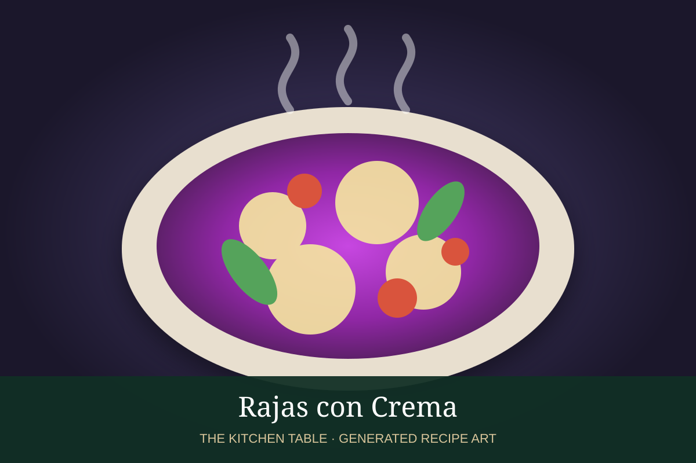

← Back to all recipes
POBLANO · MEXICAN
Rajas con Crema
Roasted poblano strips with onion, corn, crema, and melting cheese.
35 minServes 6

Photo: Recetas Mexas
Ingredients
- 6 poblano peppers
- 1 tbsp butter
- 1 white onion, sliced
- 1 cup corn kernels
- 1 cup Mexican crema
- 6 oz Oaxaca or Monterey Jack cheese
- Salt and pepper
Preparation
- Char poblanos, steam, peel, seed, and slice into strips.
- Cook onion in butter until soft.
- Add rajas and corn and cook 3 minutes.
- Stir in crema and simmer gently.
- Add cheese and cook until melted; season and serve.